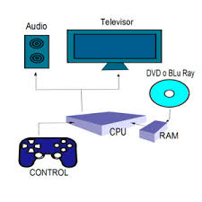
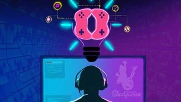
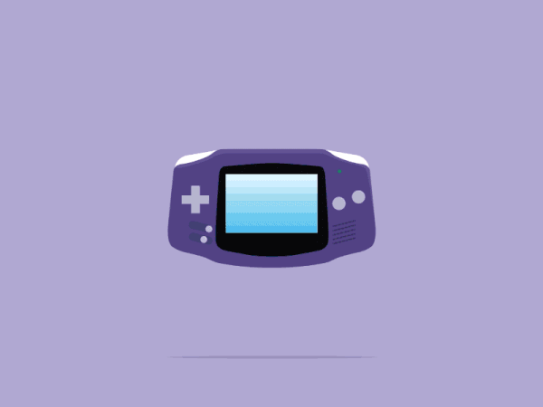
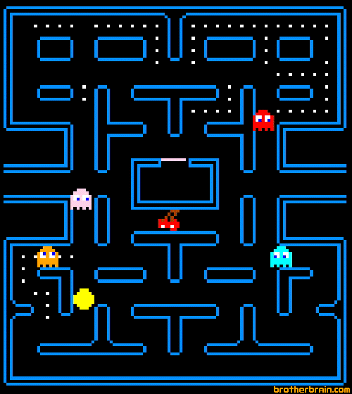

Los videojuegos son sistemas interactivos complejos que integran múltiples componentes técnicos para crear experiencias inmersivas. A diferencia de otros medios digitales, su funcionamiento depende de la sincronización perfecta entre hardware, software y diseño interactivo. Este ensayo examina los mecanismos fundamentales que permiten el funcionamiento de los videojuegos, desde el procesamiento de datos hasta la interacción con el usuario, pasando por la renderización gráfica y la inteligencia artificial.



